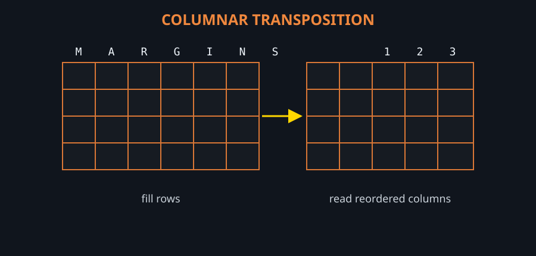

Cryptanalysis is younger than cryptography by a few thousand years and has been winning for about eleven hundred of them. What follows is the line of descent for the techniques this solver actually uses — frequency analysis, the Kasiski examination, the index of coincidence, hill climbing on n-gram statistics — with the people who found them.
The timeline§
- 9th century — al-Kindi, Baghdad
The Manuscript on Deciphering Cryptographic Messages describes counting letter frequencies and matching them against the frequencies of the language. It is the first written account of cryptanalysis anywhere, and it makes every monoalphabetic cipher obsolete in the same stroke. - 1467 — Leon Battista Alberti, Florence
The cipher disk: two concentric alphabets that can be turned mid-message. Alberti's polyalphabetic idea is the first real answer to al-Kindi, and it takes European cryptography four centuries to use it properly. - 1553 — Giovan Battista Bellaso
Publishes the cipher the world would later call Vigenere's — a repeating keyword selecting a different alphabet for each letter. - 1586 — Blaise de Vigenere
The Traicté des chiffres describes the autokey cipher, in which the plaintext extends its own key. It is genuinely stronger than the cipher that took his name, and it is the one that did not catch on. - 1854 — Charles Babbage
Breaks Vigenere by spotting that repeated ciphertext fragments reveal the key length. He never publishes, possibly at the request of British intelligence during the Crimean War, and the credit goes elsewhere. - 1863 — Friedrich Kasiski
Publishes the same attack. The Kasiski examination — measure the gaps between repeated fragments, take their common factors — is still the first thing this solver tries on a suspected polyalphabetic cipher. - 1883 — Auguste Kerckhoffs
States the principle that a cipher must stay secure when everything about it except the key is public. Every honest claim in cryptography since is measured against it. - 1917 — Room 40, London
Nigel de Grey and William Montgomery decrypt the Zimmermann Telegram, in which Germany offers Mexico an alliance against the United States. Britain then has to leak it without revealing that it reads German traffic. It is the clearest case in history of cryptanalysis changing the course of a war. - 1918 — Georges Painvin, France
Breaks ADFGVX — a fractionating cipher over a transposition — during the German spring offensive, reportedly losing fifteen kilos in the three months it takes. The decrypt that locates the attack is called the Radiogram of Victory. - 1920s — William and Elizebeth Friedman
William Friedman's Index of Coincidence and Its Applications in Cryptography (1922) turns codebreaking into statistics and coins the word cryptanalysis. Elizebeth Smith Friedman breaks the ciphers of Prohibition smugglers and, later, Nazi intelligence networks in South America — work credited to J. Edgar Hoover's FBI for decades. - 1932 — Marian Rejewski, Poland
Using permutation theory and material from French intelligence, Rejewski reconstructs the internal wiring of the German Enigma — a machine he has never seen. With Jerzy Rozycki and Henryk Zygalski he builds the cyclometer and the bomba. In July 1939, weeks before the invasion, Poland hands everything to Britain and France. - 1939-45 — Bletchley Park
Alan Turing and Gordon Welchman design the bombe, whose diagonal board turns a crib into a contradiction machine. Turing's Banburismus applies sequential Bayesian reasoning to naval Enigma years before the statistics literature catches up. Joan Clarke works in Hut 8; Mavis Batey breaks the Italian naval traffic behind Matapan and the Abwehr machine that makes the D-Day deception possible. - 1941-45 — Tunny and Colossus
Bill Tutte deduces the structure of the Lorenz SZ40 from a single mis-sent message, without ever seeing the machine — arguably the greatest single feat of cryptanalysis on record. Tommy Flowers builds Colossus, 1,600 valves, to do the statistics: the first electronic digital computer, and classified for thirty years afterwards. - 1940 — Purple, Washington
Frank Rowlett's team reconstructs the Japanese diplomatic machine by pure analysis. Genevieve Grotjan spots the pattern that opens it. The US is reading Tokyo's diplomatic traffic before Pearl Harbor — which is not the same as knowing where the carriers were going. - 1943-80 — Venona
A tiny reuse of one-time pad key material by Soviet cipher clerks is enough. Meredith Gardner and colleagues read fragments of Soviet intelligence traffic for decades. A one-time pad is unbreakable only if the pad is used exactly once. - 1976-78 — Public-key cryptography
Diffie and Hellman publish key exchange without a shared secret; Rivest, Shamir and Adleman publish RSA. (Clifford Cocks at GCHQ had the same idea in 1973; it stayed classified until 1997.) Cryptography stops being a government monopoly. - 1990-93 — Modern cryptanalysis
Biham and Shamir publish differential cryptanalysis; it emerges later that IBM and the NSA knew of it in 1974 and quietly hardened DES against it. Matsui publishes linear cryptanalysis in 1993. Attacks become statistical again, on a new scale. - 2020 — Zodiac Z340
Fifty-one years after it was posted, the Zodiac killer's 340-character cipher falls to David Oranchak, Sam Blake and Jarl Van Eycke — a transposition wrapped around a homophonic substitution, found by search where hand analysis had failed.
What the pattern shows§
Three things recur. First, ciphers are broken by structure, not by guessing: al-Kindi counted letters, Kasiski measured gaps, Friedman computed coincidences, Tutte inferred a machine from its output. Second, the break usually arrives through operator habit rather than mathematics — repeated message keys, stock openings, a reused pad. Third, the people who did the work were frequently not credited: Babbage published nothing, Elizebeth Friedman's cases were attributed to the FBI, Flowers was ordered to destroy his own computers, and Bletchley's staff said nothing for thirty years.
Where this tool sits§
Nothing here is novel. This solver is al-Kindi's frequency analysis and Friedman's index of coincidence, run a few million times a second, with quadgram statistics standing in for a human's sense of whether a line reads as English. What has changed since 1945 is the cost of trying: a hill climb over 25! alphabets is not a cleverer idea than anagramming by hand, only a faster one.
Read on: the cryptanalysts themselves, or the ciphers that made history — and the ones still unread.
Frequently asked questions§
Who invented cryptanalysis?
al-Kindi, in ninth-century Baghdad. His manuscript on deciphering messages is the first known description of frequency analysis, and it made every monoalphabetic cipher breakable.
Who really broke the Vigenere cipher?
Charles Babbage, around 1854, but he never published. Friedrich Kasiski published the same attack independently in 1863, and the method carries his name.
Was Enigma broken by Britain or by Poland?
Poland first. Marian Rejewski reconstructed the machine's wiring in 1932 and Polish cryptologists handed their results to Britain and France in July 1939. Bletchley Park then scaled the attack to the wartime traffic.
Is any cipher unbreakable?
The one-time pad, and only under strict conditions: the key must be truly random, as long as the message, and never reused. The Venona decrypts exist because Soviet clerks reused pad material.